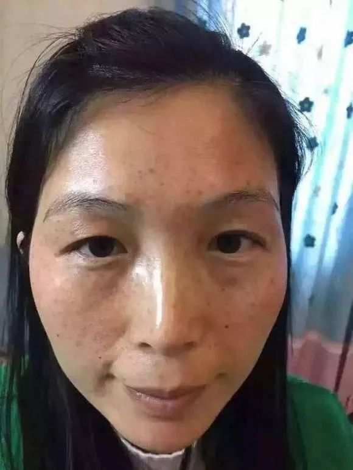
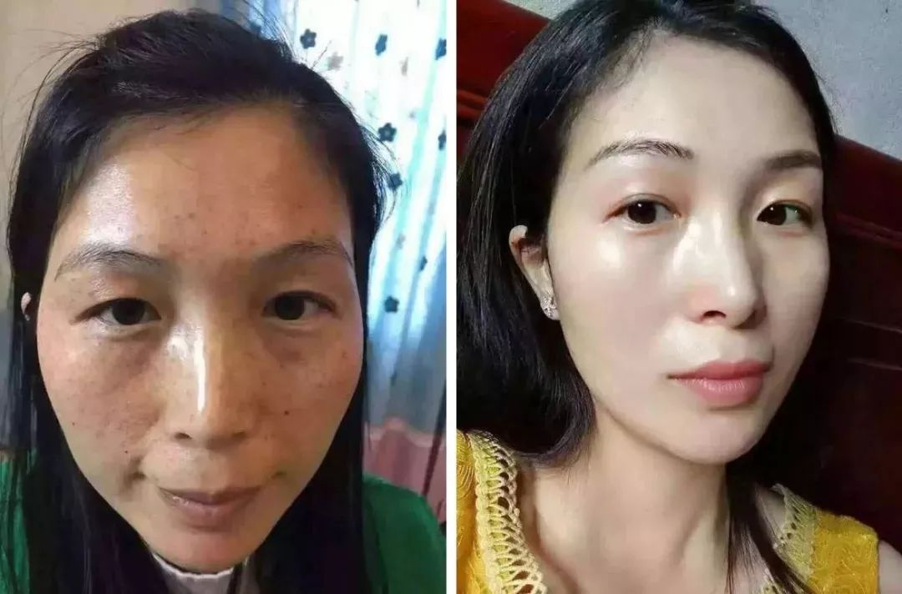
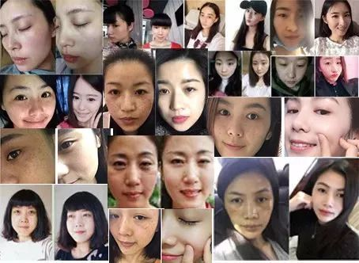
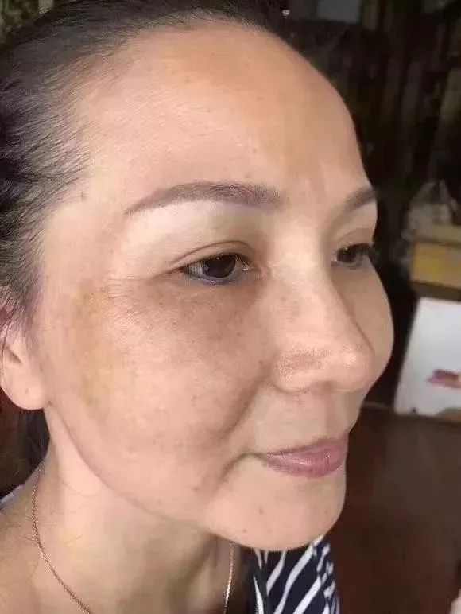
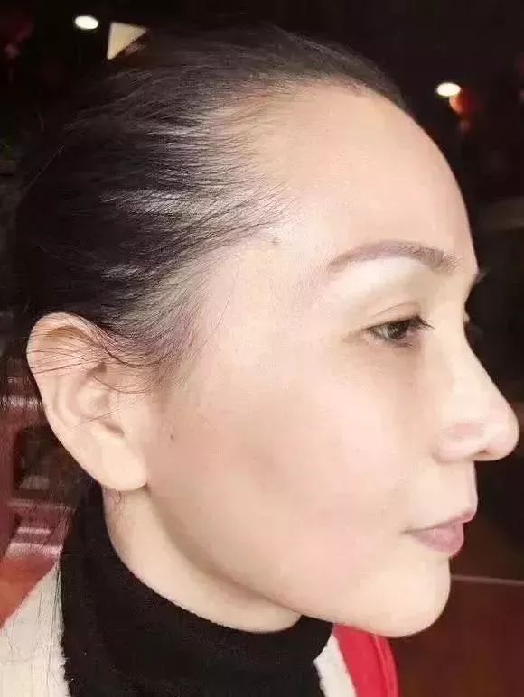

头条新闻
围观
一个42岁的女人，竟然在3个月的时间里逐渐"返老还童"，脸上密布的斑点和纹路一点点消失不见，肌肤白皙水嫩，看起来年轻了20岁！
丨更多
这是刚刚发生在福建厦门市汪萍身上的真实经历。出差许久的老公看到她，惊得张大嘴巴；走在街上，男人们的视线总是追随着她；去学校看望儿子，却被误认成姐姐......汪萍老公说，现在带老婆出去别人都以为是他找的小三，看起来实在太年轻了！
看看汪萍前两天朋友圈发的自拍， 脸上一颗斑点都没有，捕捉不到半点粗糙暗沉的影子，就连毛孔都看不出来，全脸零瑕疵，青春逼人！哪里像一个42岁的中年妇女？
汪萍还是下面这副模样

皮肤粗糙暗黄，毫无光泽，眼周和嘴角存在严重色素沉着，即使擦了粉底，脸颊成片的色斑依然特别明显，看上去比同龄人还要显老…完全就是一张中年油腻脸。
对于妻子突然间的容貌变化，汪萍的丈夫和身边亲戚的第一反应是去了医院做整容，甚至还质问妻子："换这样一张脸是不连家底都败掉了，挺大岁数没个正经！"
面对丈夫的指责，汪萍忍不住大笑，说："我怎么舍得去整容呢，动不动得花个十几万，咱的钱我还留着给儿子结婚娶媳妇呢。再说谁整容脸不红不肿的？ 我皮肤变得这么好，其实都是吉米的功劳！“
看老公一脸疑惑，汪萍解释道："我同事张英之前也是满脸斑，后来她女儿给她找了一位叫吉米的护肤老师微信，老师根据她的情况教了她一个祛斑的法子， 用了两三个月不仅斑没了，皮肤还越来越好了。我也跟着试试，没想到效果竟然这么好！"
刚开始我也不太信，但从网上一查发现确实有好多人的色斑和皮肤问题都是被吉米老师解决的。我想着多听听专家的建议也没啥没坏处，万一真有用呢。结果按老师教的方法试了两个星期，斑点就有淡化的痕迹，脸也没那么干了；又用了一个多月，现在整个脸一点斑都没有了，白了不少！皮肤好了，什么都好了！"
"吉米老师的方法真厉害！我VE、VC没少吃，面膜也没少敷，一周一次美容院，也没去掉的斑，现在几乎没花什么钱却全没了，皮肤还越来越好了。你看我这皮肤通透白亮了好几成，真是比年轻那会儿还好！"汪萍兴奋地说。
现在只要3分钟，学会吉米老师的祛斑方法，不管你是雀斑、黄褐斑、日晒斑，还是其他顽固性色斑都非常实用！想要立即祛斑的朋友，可以直接加微信 ，免费咨询祛斑方案~
她的祛斑方法真有这么 神奇吗？
80后可能听说的少，但是在60后、70后心中，吉米可谓是美容界神话般的存在。

吉米老师给长斑女性的一封信
大家好，我是吉米，我从事美容行业50多年了。色斑问题困扰着80%以上的女性，就连明星艺人也不例外！我一直想为大家找到一种安全有效的方法彻底解决色斑问题。功夫不负有心人，我与中、日、美三国的顶尖美容研发专家合作攻关多年，终于找到了！
5年来，我已帮助无数斑友改善了可恶的色斑问题，总结了一套自己的独特祛斑方法和经验，这个方法非常安全，能分解难缠的色素斑点、改善粗大毛孔、干皱松弛或者冒油肌肤，对多种类型斑点的效果都非常好，还避免了因长斑带来的肌肤后遗问题。
在对吉米老师帮助过的10000名受益者的回访中： 98.7%的人表示，坚持使用吉米祛斑方法1个月，色斑明显淡化，皮肤变得白嫩细滑。 "逆生长"现象比比皆是。

去年长沙一位妈妈长期坚持使用吉米老师教她的祛斑美白护肤方法，半年时间，6次换脸，48岁看起来像28岁，后来竟被儿子的新女友误认为是小三，引发了一场让人啼笑皆非的误会。
42岁的文敏是上海一家传媒公司销售总监，每天跟客户打交道，好形象等同于无形的职业资格证书。为此文敏不惜重金买大牌化妆品，去美容院，在相当长一段时间，文敏看起来确实比同龄人年轻。可随着年龄增长和工作压力的增加，脸上的色斑越长越多，一下子老了十几岁。用了很多昂贵的护肤品和护肤方法，都无济于事。
在一个客户的推荐下找到了吉米老师，按老师教她的方法用了2个月，脸上的色斑明显变浅，皮肤透亮好几度。看到效果后一直坚持使用，肌肤越来越白皙水嫩。半年用下来，不但脸上找不出一个斑点，连眼角皱纹都完全消失了，老公都说她看上去比刚结婚那会儿还漂亮。
现在只要3分钟，学会吉米老师的祛斑方法，不管你是雀斑、黄褐斑、日晒斑，还是其他顽固性色斑都非常实用！想要立即祛斑的朋友，可以直接加微信 ，快速祛斑方案免费领~
统统拿下
佳佳28岁生完孩子，各种肌肤问题开始"趁虚而入"。眼袋黑眼圈，皮肤干燥起皮，还出现了很多小细纹和斑点，鼻翼两侧毛孔粗大，肤质粗糙暗哑，看起来比实际年龄老10岁。不抹粉不敢出门，抹上粉脸颊、鼻头严重卡粉，特别难看。
等到孩子上小学后，佳佳开始找工作，可因为形象问题，屡次碰壁。有一次面试中，面试官突然问她：公司缺少一名保洁员，问她要不要考虑。佳佳当时就崩溃了。
后来从一档知名护肤节目上知道了吉米老师，按老师教的日常护肤技巧，每天精心护理自己的肌肤。一个月后肌肤焕然一新，色斑没了，粗糙平了，暗黄褪了，皮肤越来越饱满水嫩。坚持到3个月的时候，脸上瑕疵统统不见了，除了嫩就是白。很快就被一家地产公司选中做销售顾问，月入过万。
男人不一定会感激一个为了家庭而容颜渐衰的妻子，却一定不会拒绝一个时刻光鲜靓丽的女人！所以不管30岁、40岁、50岁，我们一定要好好宠爱自己。
女人最好的状态，就是眼里写满故事，脸上却不见风霜。时间带给我们的，应该是数若珍宝的回忆，而不是 一片片斑点、一声声黄脸婆带来的绝望！

如果你也想铲除色斑，想要变美变年轻！现在就加吉米老师微信 ，专业护肤老师一对一为你服务，免费咨询祛斑方案。
这一次，一定能让你摆脱色斑，找回自信，做素颜女神！

 389
389  101
101  90
90  85
85  65
65  55
55  43 33 39 39
43 33 39 39